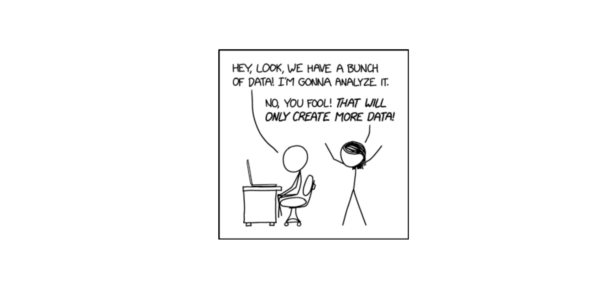
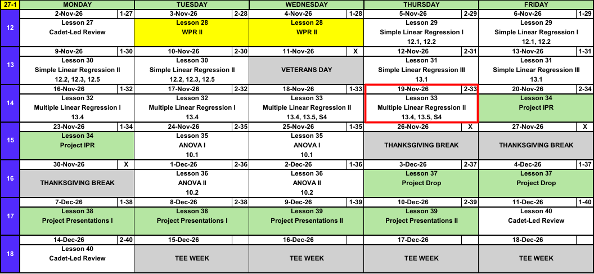
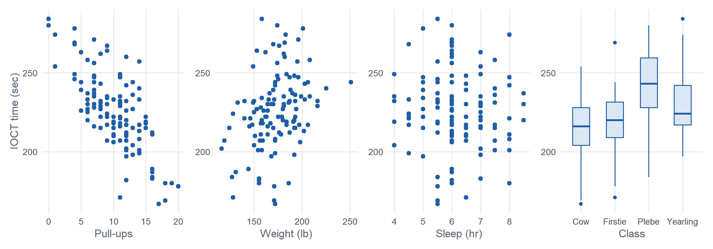
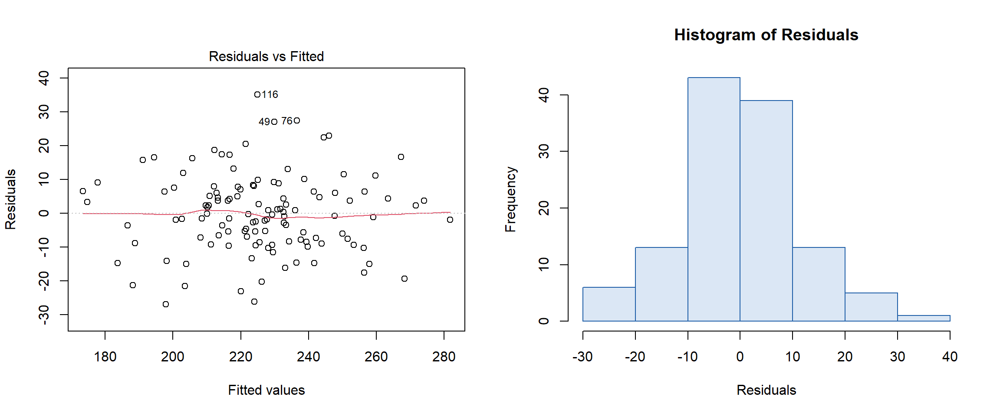

Lesson 33: Multiple Linear Regression II
Calendar

Admin
- Project IPR: next lesson, Lesson 34 (20, 23 Nov). Come in as finished as possible.
- Project starter code: Lesson 32
What We Did: Lessons 29 to 32
NoteKey Concepts from Lesson 29
- Least squares: choose \(\hat{\beta}_0\), \(\hat{\beta}_1\) to minimize \(\sum (y_i - \hat{y}_i)^2\)
- \(\hat{\beta}_1 = \dfrac{\sum (x_i - \bar{x})(y_i - \bar{y})}{\sum (x_i - \bar{x})^2}\), \(\hat{\beta}_0 = \bar{y} - \hat{\beta}_1\bar{x}\)
- Slope: change in the mean of \(y\) for a one unit increase in \(x\)
- Predict only inside the range of the \(x\) data
NoteKey Concepts from Lesson 30
- Slope test: \(H_0: \beta_1 = 0\), \(t = \hat{\beta}_1 / s_{\hat{\beta}_1}\), df \(= n - 2\)
- \(r^2 = 1 - \text{SSE}/\text{SST}\): proportion of variation in \(y\) explained by the line
- R:
lm(y ~ x),summary(),predict()
NoteKey Concepts from Lesson 31
- Model: \(Y = \beta_0 + \beta_1 x + \varepsilon\), \(\varepsilon \sim N(0, \sigma^2)\), independent
- LINE: Linear, Independent, Normal, Equal variance
- Residual plot (residuals vs fitted): no pattern checks L, constant spread checks E
- Histogram of residuals: checks N
- Independence: comes from how the data were collected
NoteKey Concepts from Lesson 32
- Model: \(Y = \beta_0 + \beta_1 x_1 + \beta_2 x_2 + \cdots + \beta_k x_k + \varepsilon\)
- Interpret \(\hat{\beta}_j\): holding all else constant, a one unit increase in \(x_j\) is a \(\hat{\beta}_j\) unit increase in \(y\), on average
- Not significant? Drop it and refit
- Categorical with 3 levels: 2 indicator variables; each coefficient is a difference from the baseline level
- R:
lm(y ~ x1 + x2 + x3)
What We’re Doing: Lesson 33
Objectives
- Assess the assumptions of the multiple regression model and judge model adequacy. (SLO 4, 6)
- Interpret the coefficient of multiple determination \(R^2\) and adjusted \(R^2\). (SLO 4)
- Incorporate categorical predictors using indicator (dummy) variables and interpret their coefficients. (SLO 4)
Required Reading
Devore 13.4, 13.5, S4
Break!
DMath Intramurals
DMath Volleyball!!
Math vs EECS
NotePreviously 1-3
3-3
The Takeaway for Today
NoteKey Concepts from Lesson 33
- Not significant? Drop the predictor and refit
- Categorical: each indicator compares one level to the baseline; keep the variable if any level is significant
- \(R^2\): proportion of the variation in \(y\) explained by the model; adjusted \(R^2\) penalizes extra predictors
- LINE: same plots as Lesson 31,
plot(model, which = 1)andhist(model$residuals)
The IOCT
What drives Indoor Obstacle Course Test time? 120 cadets. Download the data
- time: IOCT time (sec), the response
- pullups: max pull-ups
- weight: body weight (lb)
- sleep: hours of sleep the night before
- class: Cow, Firstie, Plebe, or Yearling

Start With Everything
ioct <- read.csv("ioct-mlr.csv")
model1 <- lm(time ~ pullups + weight + sleep + class, data = ioct)
summary(model1)
Call:
lm(formula = time ~ pullups + weight + sleep + class, data = io)
Residuals:
Min 1Q Median 3Q Max
-26.885 -7.814 -0.229 6.532 35.117
Coefficients:
Estimate Std. Error t value Pr(>|t|)
(Intercept) 201.45917 10.72836 18.778 < 2e-16 ***
pullups -4.22389 0.27716 -15.240 < 2e-16 ***
weight 0.34319 0.04758 7.212 6.70e-11 ***
sleep -0.07612 1.02606 -0.074 0.940996
classFirstie -0.54505 3.21873 -0.169 0.865835
classPlebe 21.08757 3.22546 6.538 1.88e-09 ***
classYearling 12.10654 3.15409 3.838 0.000205 ***
---
Signif. codes: 0 '***' 0.001 '**' 0.01 '*' 0.05 '.' 0.1 ' ' 1
Residual standard error: 11.81 on 113 degrees of freedom
Multiple R-squared: 0.7711, Adjusted R-squared: 0.7589
F-statistic: 63.43 on 6 and 113 DF, p-value: < 2.2e-16
NoteWhich predictors are significant? Why?
- pullups, weight: P-values < 0.001. Significant.
- classPlebe, classYearling: P-values < 0.001. Significant.
- sleep: P-value = 0.94. Not significant.
- classFirstie: P-value = 0.87. Not significant, but it is one level of class. Plebe and Yearling are significant, so class stays.
Drop sleep and refit.
Refit Without Sleep
model2 <- lm(time ~ pullups + weight + class, data = ioct)
summary(model2)
Call:
lm(formula = time ~ pullups + weight + class, data = io)
Residuals:
Min 1Q Median 3Q Max
-26.920 -7.870 -0.264 6.514 35.137
Coefficients:
Estimate Std. Error t value Pr(>|t|)
(Intercept) 201.00716 8.79151 22.864 < 2e-16 ***
pullups -4.22434 0.27588 -15.312 < 2e-16 ***
weight 0.34304 0.04733 7.248 5.42e-11 ***
classFirstie -0.52795 3.19643 -0.165 0.869104
classPlebe 21.11634 3.18805 6.624 1.21e-09 ***
classYearling 12.11452 3.13847 3.860 0.000188 ***
---
Signif. codes: 0 '***' 0.001 '**' 0.01 '*' 0.05 '.' 0.1 ' ' 1
Residual standard error: 11.76 on 114 degrees of freedom
Multiple R-squared: 0.7711, Adjusted R-squared: 0.761
F-statistic: 76.79 on 5 and 114 DF, p-value: < 2.2e-16\[\widehat{\text{time}} = 201.01 - 4.22\,(\text{pullups}) + 0.34\,(\text{weight}) - 0.53\,x_{\text{Firstie}} + 21.12\,x_{\text{Plebe}} + 12.11\,x_{\text{Yearling}}\]
Interpret the Slopes
NoteInterpret each coefficient.
- pullups: holding all else constant, a one pull-up increase is a 4.22 second decrease in IOCT time, on average.
- weight: holding all else constant, a one pound increase in body weight is a 0.34 second increase in IOCT time, on average.
- classFirstie: holding all else constant, Firsties are 0.53 seconds faster than Cows, on average. Not significant: no evidence Firsties and Cows differ.
- classPlebe: holding all else constant, Plebes are 21.12 seconds slower than Cows, on average.
- classYearling: holding all else constant, Yearlings are 12.11 seconds slower than Cows, on average.
Which Factors Are Significant? Why?
NoteAnswer
- pullups, weight, Plebe, Yearling: P-values < 0.001, below 0.05. Reject \(H_0: \beta_j = 0\).
- Firstie: P-value = 0.87, above 0.05. Fail to reject: Firsties are no different from the baseline, Cows.
What Is \(R^2\)? What Does It Mean?
NoteAnswer
\(R^2 =\) 77.1%. The model explains 77.1% of the variation in IOCT time.
Adjusted \(R^2\) penalizes predictors that don’t help.
| Model | \(R^2\) | Adjusted \(R^2\) |
|---|---|---|
| With sleep | 77.1% | 75.9% |
| Without sleep | 77.1% | 76.1% |
Dropping sleep barely moved \(R^2\), and adjusted \(R^2\) went up.
Critique the Assumptions
plot(model2, which = 1)
hist(model2$residuals)
NoteIs each LINE assumption reasonable?
- L (Linear): residuals vs fitted shows no pattern. Reasonable.
- I (Independent): one IOCT per cadet, cadets run separately. Reasonable.
- N (Normal): histogram is roughly symmetric and bell shaped. Reasonable.
- E (Equal variance): spread is about the same across the fitted values. Reasonable.
Let’s Go to Vantage!
library(tidyverse)
library(foundry)
master <- datasets.read_table("ay27_1_master")
MY_BRIGADE <- "20TH ENGINEER BRIGADE"
bde <- master |>
filter(BrigadeName == MY_BRIGADE) |>
select(height, weight, sex) |>
filter(!is.na(height), !is.na(weight), !is.na(sex))
mod <- lm(weight ~ height + sex, data = bde)
summary(mod)
plot(mod, which = 1)
hist(mod$residuals)- Which predictors are significant? Why?
- Interpret each coefficient.
- What is \(R^2\)? What does it mean?
- Is each LINE assumption reasonable?
- Do the same for your project model. Drop what isn’t significant and refit.
Before You Leave
Today
- Predictor not significant: drop it and refit
- Categorical: one level not significant? Keep the variable if another level is
- \(R^2\): proportion of the variation in \(y\) explained; adjusted \(R^2\) penalizes extra predictors
- Check LINE on the refit model
Any questions?
Next Lesson
Lesson 34: Project IPR
- 20, 23 Nov
- Come in as finished as possible
Upcoming Graded Events
- Project IPR: Lesson 34 (20, 23 Nov)
- Project Products: Lesson 37 (3, 4 Dec)
- TEE: 15 to 18 Dec 2026